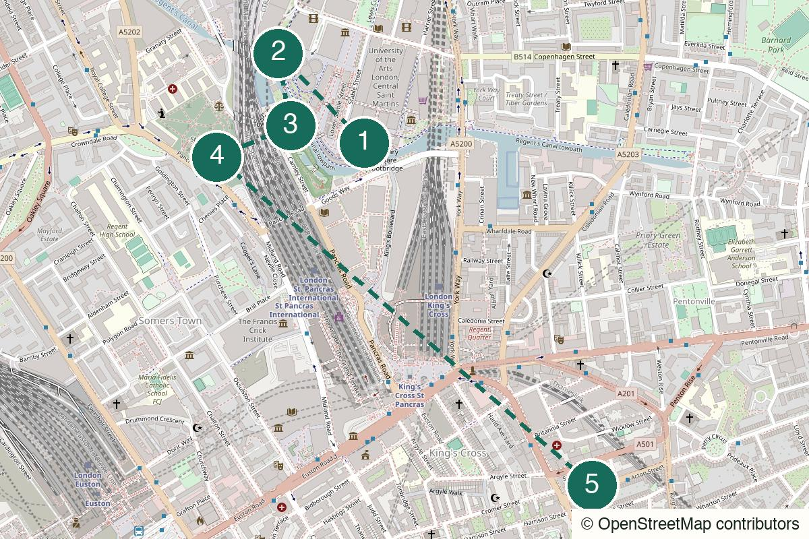

London Not yet field-walked
Rotherhithe
Warehouses, water and an old-room finish for a quieter stretch of the Thames.
Start Canada Water
Not yet field-walked · verify live details
A canal-side start, a quiet churchyard and an easy pub finish for two people who do not need a big plan.
No field notes from readers yet — share one if you walk it.
King’s Cross St Pancras – Use the King’s Cross exit towards Granary Square rather than meeting in the station concourse.
Granary Square
Open the whole walk (opens in a new tab)
Camley Street Natural Park has controlled access. Use the Gasholder Park and churchyard version if it is closed, and follow live maps for crossings.
We never ask for your location.
Begin in the part of King’s Cross that looks newly made, then let the route become smaller and stranger. The water and gasholder are the first conversation; the churchyard is the quiet pause; the pub is nearby enough that the plan never feels trapped.
Not secret, not untouched and not worth forcing after the nature reserve closes.
The first hour is visibly structured, but every point creates a natural exit.
Works for two to four people if everyone is content with a short walk rather than a packed itinerary.
The daytime version works alone, though the close-by pub finish is less essential.

Granary Square, King’s Cross, London N1C
From the start From King’s Cross St Pancras, follow signs for Granary Square and meet beside the canal rather than inside the station.
Use the square only as a clean starting point. Have one lap, decide whether the day needs a coffee, then leave before the development becomes the whole route.
Walk here from the station to Granary Square (opens in a new tab)Official information for Granary Square (opens in a new tab)
Gasholder Park, King’s Cross, London N1C
From the previous stop Follow the canal-side park east from Granary Square towards the circular gasholder structure.
A short, strange industrial pause that gives you something to look at without needing an attraction to explain itself.
Walk from the previous stop to Gasholder Park (opens in a new tab)Official information for Gasholder Park (opens in a new tab)
12 Camley Street, London N1C 4PW
From the previous stop From Gasholder Park, follow the live walking route to Camley Street. Enter only if the reserve is open; otherwise skip directly to St Pancras Old Churchyard.
The green interruption is the point. If it is closed, do not replace it with another paid stop: keep the route short and move on.
Walk from the previous stop to Camley Street Natural Park – daytime branch (opens in a new tab)Official information for Camley Street Natural Park – daytime branch (opens in a new tab)
St Pancras Old Church, Pancras Road, London NW1 2BA
From the previous stop Walk south from Camley Street through the quieter streets towards Pancras Road. If the park was closed, use this as the first proper pause instead.
Take a slow lap of the churchyard rather than treating it as a history lesson. It is the part that makes the route feel less like a redeveloped district.
Walk from the previous stop to St Pancras Old Churchyard (opens in a new tab)Official information for St Pancras Old Churchyard (opens in a new tab)
66 Acton Street, London WC1X 9NB
From the previous stop From the churchyard, head south-east to Acton Street. Keep King’s Cross behind you until you are ready to leave; the station is still only a short walk away.
A deliberately close finish: there is room for a pint and a conversation, but no obligation to turn it into dinner or a second venue.
Walk from the previous stop to The Queen’s Head (opens in a new tab)Official information for The Queen’s Head (opens in a new tab)
Nearest practical station: King’s Cross St Pancras
The pub is about two minutes from King’s Cross, so either person can leave without making the end of the route feel like a statement.
No recurring happy-hour pricing was confirmed on the venue’s official page when this route was drafted. Check the current menu and opening hours before making it the finish.
Dry afternoon into early evening
Treat the pub as drinks first. Check current food and seating before making it dinner.
The full version when Camley Street Natural Park is open.
Skip the reserve after access hours and keep the route short, calm and useful.
Skip the nature reserve, keep Gasholder Park brief and go straight to the churchyard or finish early in the pub.
Stay for another drink, or return to Granary Square for a final canal-side lap rather than adding a third venue.
Leave from King’s Cross after Gasholder Park, or from the churchyard before the pub finish.
A station district that gets less station-like the longer you let it breathe.
This day sounds like: Glass Caves – Taipei Nights
Help keep it useful
Closed gates, changed hours and the point where you bailed are more useful than polite applause.